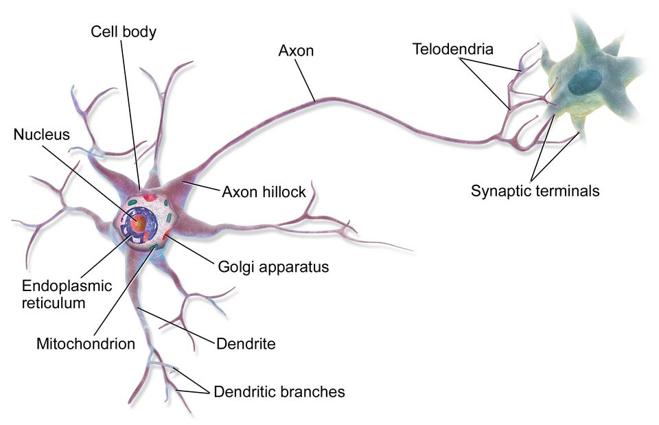
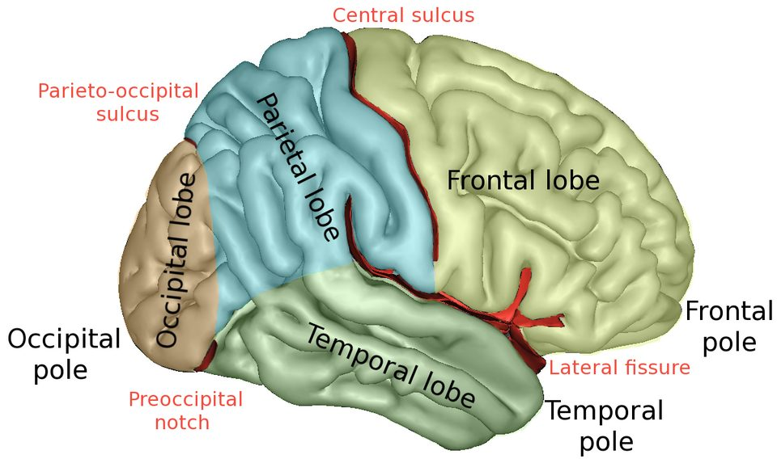
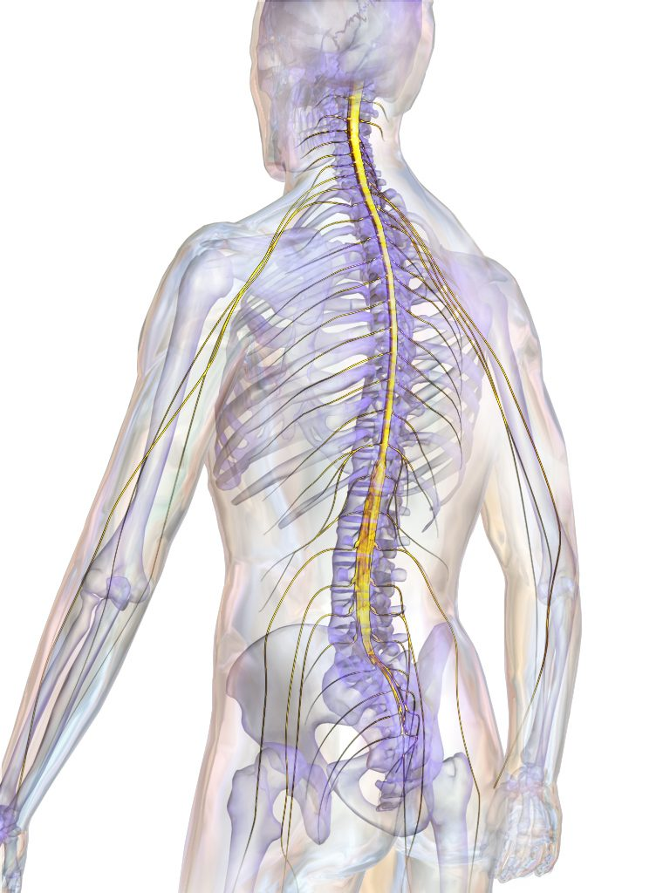

A map of the nervous system
Neurons, synapses, glia, cortex and lobes, cerebellum, basal ganglia, brainstem, spinal cord and nerves.
Cells and signals

Cells and signalsThe neuron
The cell that thinks: it receives signals through its dendrites, integrates them in the cell body and sends them along the axon. The brain has about 86 billion of them.
Read → Cells and signals
Cells and signalsSynapses and neurotransmitters
The contact point between two neurons and the molecules that carry the message: glutamate, GABA, dopamine, serotonin, acetylcholine and others. The basis of memory and the target of many medicines.
Read → Cells and signals
Cells and signalsGlia and myelin
The cells that are not neurons: astrocytes, oligodendrocytes, microglia and Schwann cells. They support, feed, insulate and defend the nervous system, and are involved in many diseases.
Read →The brain

The brainCerebral cortex and lobes
The folded outer layer of the brain, a few millimetres thick, where perception, voluntary movement, language and thought are processed. What each lobe does.
Read → The brain
The brainCerebellum
The "little brain" behind the brainstem coordinates movement, balance and motor learning. It has more neurons than the whole rest of the brain.
Read → The brain
The brainBasal ganglia
Deep nuclei that select which movements are made and which are held back, and take part in motivation and habits. When they fail, the result is Parkinson's, chorea or dystonia.
Read → The brain
The brainBrainstem
It connects the brain with the spinal cord and controls vital functions such as breathing, heart rate and consciousness. Almost every pathway passes through it, and most cranial nerves arise from it.
Read → The brain
The brainThalamus and hypothalamus
The thalamus is the relay station for almost all information reaching the cortex; the hypothalamus is the control centre for hunger, thirst, temperature, sleep and hormones.
Read → The brain
The brainHippocampus and limbic system
The structures that form memories and give experience its emotional colour: the hippocampus, amygdala, cingulate gyrus and their connections. What patient H. M. taught us.
Read → The brain
The brainCorpus callosum and hemispheres
The two cerebral hemispheres are not the same and communicate through the corpus callosum, a bridge of 200 million fibres. What "split-brain" patients taught us, and the myths about the left and right brain.
Read →Spinal cord and nerves

Spinal cord and nervesSpinal cord
The cable that connects the brain with the body, protected inside the spine. It carries commands and sensations, and on its own organises reflexes and patterns of movement.
Read → Spinal cord and nerves
Spinal cord and nervesCranial nerves
The twelve pairs of nerves that leave the brain directly and handle smell, sight, eye movements, the face, hearing, swallowing and much more.
Read → Spinal cord and nerves
Spinal cord and nervesPeripheral nerves
The network of nerves connecting the spinal cord with the skin, muscles and organs. How they are built, what fibres they contain and why they can regenerate, unlike the brain.
Read → Spinal cord and nerves
Spinal cord and nervesAutonomic nervous system
The body's autopilot: it regulates the heart, blood pressure, breathing, digestion, sweating and bladder without us thinking about it. Sympathetic for action, parasympathetic for rest.
Read →Protection and blood supply
 Protection and blood supply
Protection and blood supplyMeninges, ventricles and cerebrospinal fluid
The three membranes that wrap the brain and spinal cord, the fluid-filled cavities inside the brain and the fluid that protects and cleans them.
Read → Protection and blood supply
Protection and blood supplyCerebral circulation
The brain is 2% of the body's weight but receives 15-20% of its blood. Four arteries, joined in the circle of Willis, supply it. Why a few minutes without blood are enough to damage it.
Read → Protection and blood supply
Protection and blood supplyBlood-brain barrier
A highly selective filter between the blood and the brain that protects neurons from toxins and microbes, but also stops many medicines getting through.
Read →